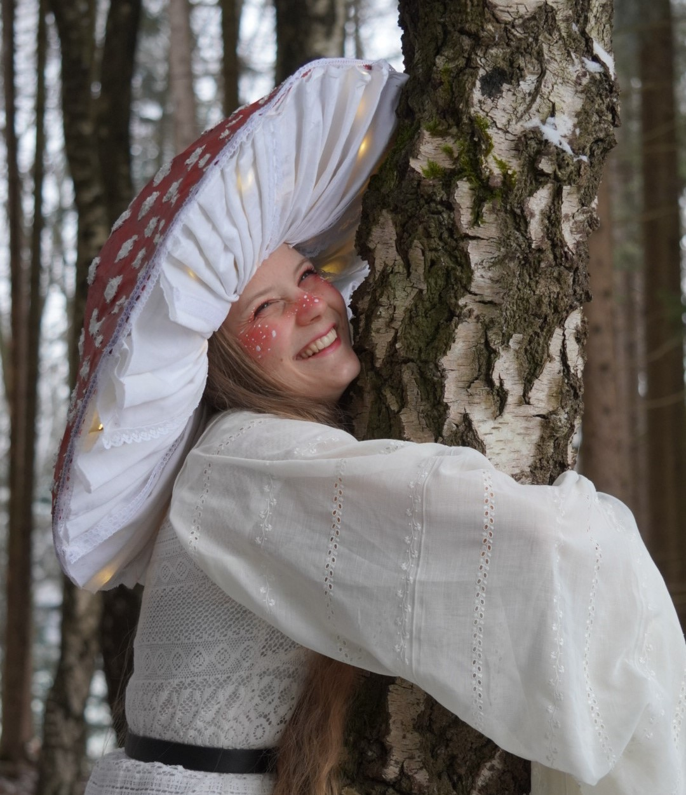

Hi, ich bin Rebbi bin 21 Jahre alt und studiere seit 2025 Kunst und Multimedia an der LMU. In meiner Freizeit mach ich alle möglichen kreativen Dinge, wie zum Beispiel nähen, töpfern, malen und vieles mehr. Meine größte Inspirationsquelle ist die Natur. Ich setze mich total gerne auf ein Bank höre den Tieren aus dem Wald zu, schaue mir die Bege an und male auch gerne mit Aquarell in der Sonne. Und ich hab sehr viele Projekte mit Pilzen hier ein paar Beispiele.
